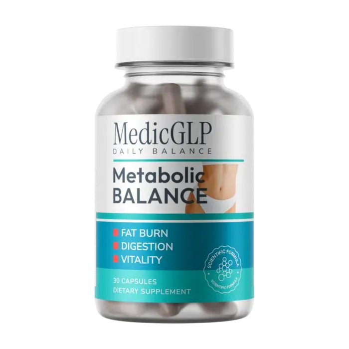

One capsule a day. Chromium plus 10 botanicals. Free UK delivery when you take 2 tubs or more.

Get MedicGLP, up to 47% off| 1 tub | £49.95 + £4.95 delivery |
| 2 tubs | £39.97 a tub, free delivery |
| 3 tubs | £36.65 a tub, free delivery |
One capsule a day with water. One tub lasts 30 days.
Yes, on orders of 2 tubs or more. One tub has £4.95 delivery.
The official shop offers a 30-day money-back guarantee.
MedicGLP is a food supplement, not a medicine. It should not replace a varied, balanced diet and a healthy lifestyle. Prices are set by the official shop and shown at checkout.